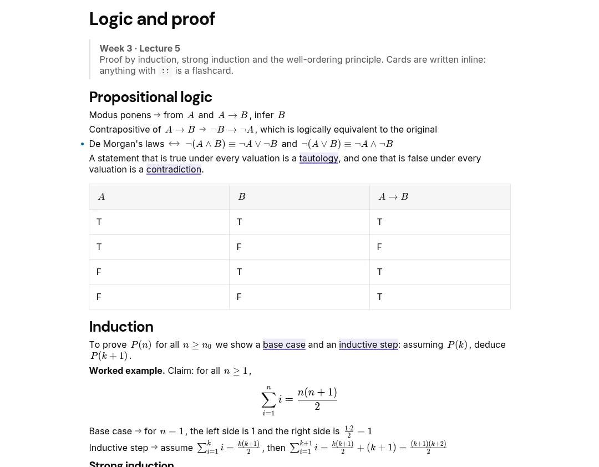
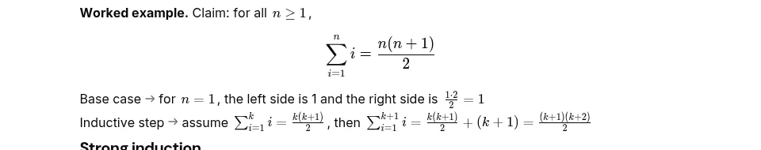

Cards in the note
The line you write is the flashcard.
Flashcards in your notes, questions from your PDFs.

Modus ponens :: from A and A → B, infer B
Front Modus ponens
Back from A and A → B, infer B
The derivative of x² is .
Logic / Inference
Modus ponens
from A and A → B, infer B
The line you write is the flashcard.
FSRS picks when you see it again.
Crop a question from a PDF you add.
LaTeX and code, in the same note.

Yes. The app is MIT licensed.
No. You write them.
No. You add the PDF.
Yes. Import an .apkg file.
On your device. Sync is optional and encrypted.